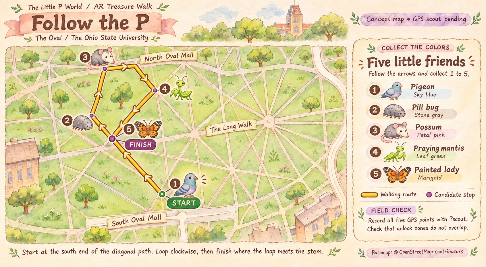

THE LITTLE P WORLD · THE OVAL
Follow the P
The Oval has lost its colors. Follow the yellow trail and find the five little friends in order.
0 / 5 colors
Simulate an arrival. Try a later stop first to test the lock.

THE LITTLE P WORLD · THE OVAL
The Oval has lost its colors. Follow the yellow trail and find the five little friends in order.
Simulate an arrival. Try a later stop first to test the lock.
